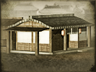

Enables
- Buildings: 

Basic Building Statistics (can be modified by difficulty level, arts, skills, traits and retainers)
- Cost: 1400
- +360 to wealth generated by trade in this province
- +1 to happiness in this province
- Enables recruitment of Rank 1 geisha
Description
"More sake! Now!"
An inn is a place for entertainment, and for weary travellers to rest on their journeys. It increases the happiness of the local population and, as they can use their skills there, enables geishas to be recruited as agents. The great Imperial roads of Japan had inns at regular intervals, allowing messengers to rest before pressing on with the Shogun's business. Unfortunately, they also had a less salubrious side: drunken duels were not unknown, and gambling was also common. Geishas, however, did not provide any "personal services" to their clients: they were decorous escorts, not prostitutes. It was their part to make sure that everyone had a good time, drank a lot, ate excessively, and spent a lot of money at the inn.